Controlled environment cultivation — where science meets patience. Currently growing Planet of the Grapes (V3.0).
CURRENT GROW: PLANET OF THE GRAPES
Phase I: Germination & Seedling
Days 0–14Seeds placed in warm, damp paper towel between two plates for germination
Taproot emerged — transplanted to potting soil in 4×2×2 grow tent. Light: 24hrs ON
Plant breached soil surface. Switched to vegetative light schedule: 18/6
Height: 7/8". Healthy turgor. Applied small amount of water to pot edges
Health check: Leaves praying upward, bright lime green meristem, symmetrical structure. Height: 1"
Height: 1 1/8". Watered
Phase II: Vegetative Growth
Day 15–PresentHeight: 1.5" | Width: 3"
Height: 1.7" | Width: 4". Watered
Height: 2.75" | Width: 4.75" — Hit height target for 23–30 day window ✓
Height: 4.5" | Width: 6.5"
Height: 6" — Grew 1.5" in 12 days. Now requiring daily watering due to increased metabolic demand
Phase III: Flowering
UpcomingWill switch to 12/12 light schedule to induce flowering
Phase IV: Harvest
UpcomingDry, cure, and enjoy the fruits of patience
PHOTO GALLERY
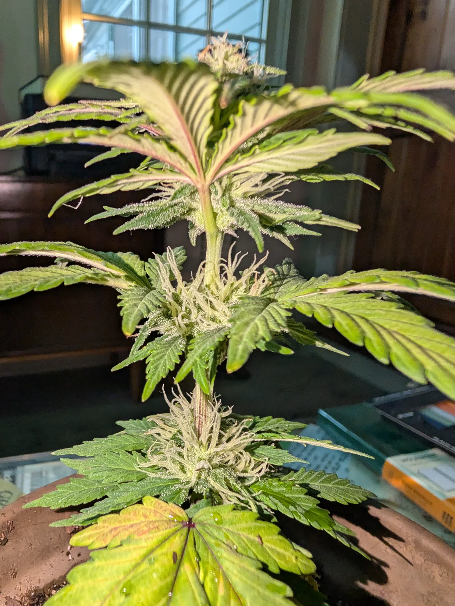
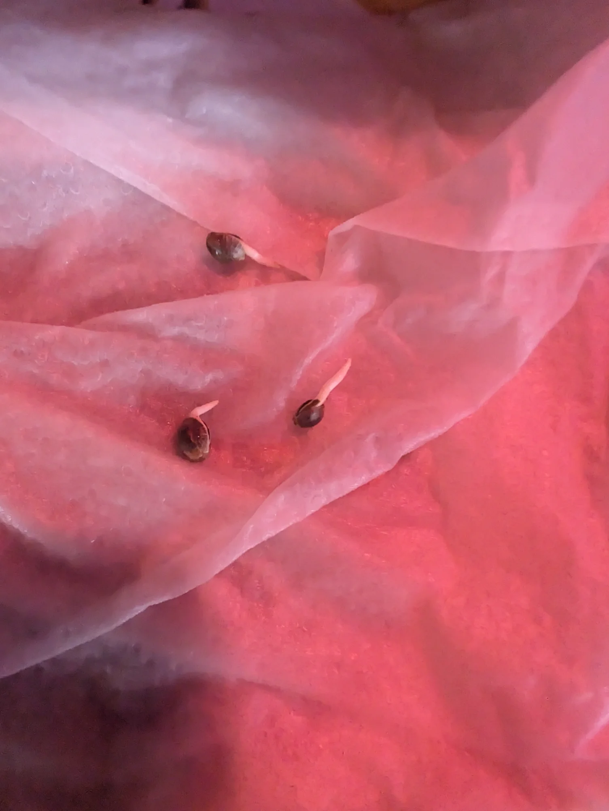
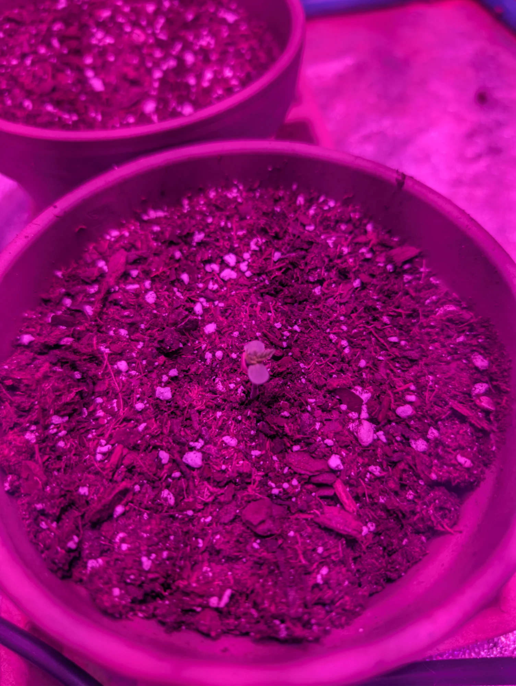
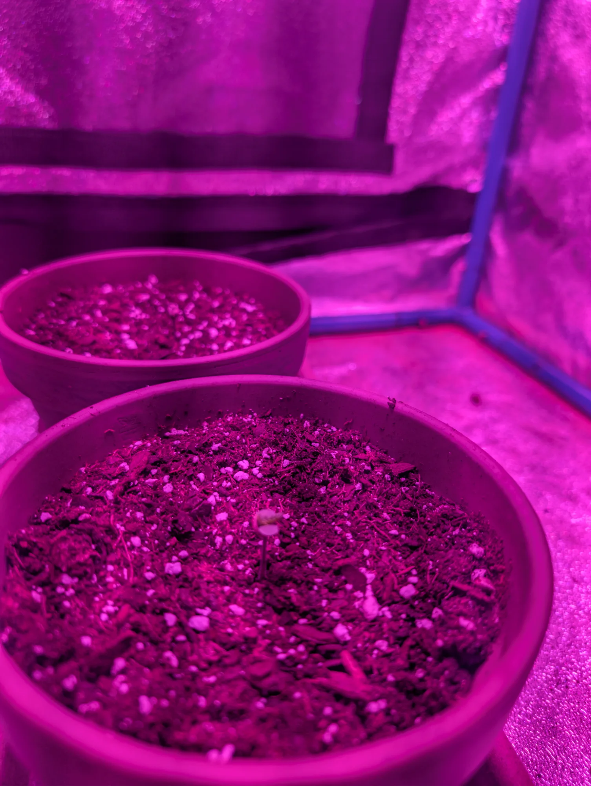
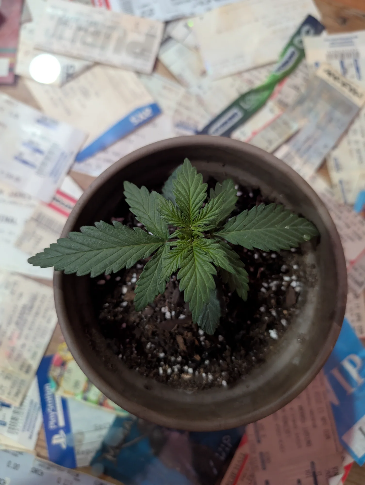
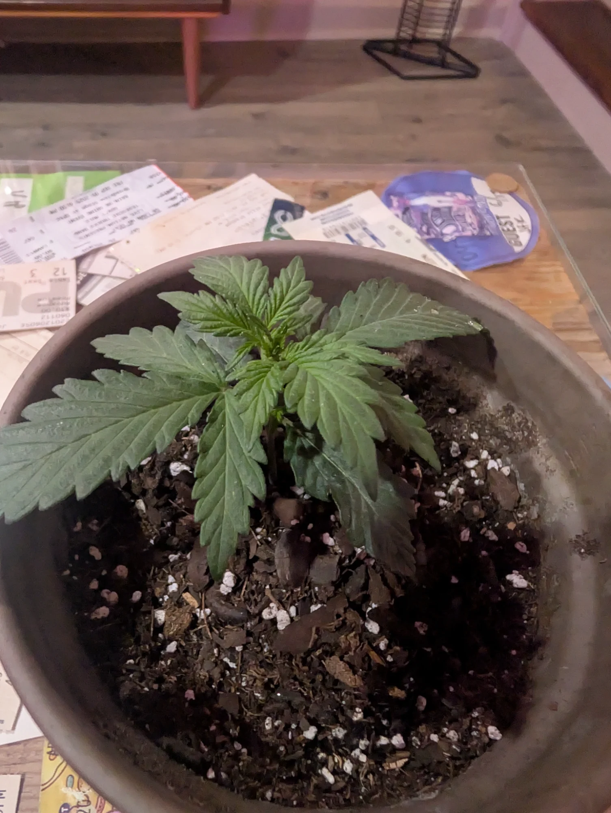
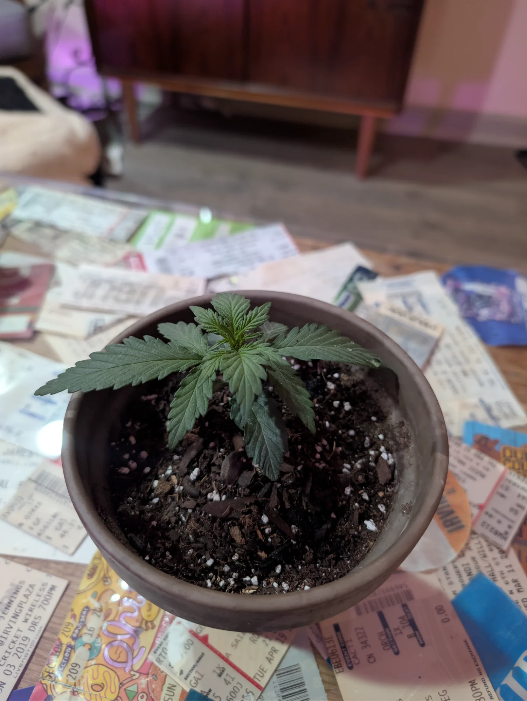
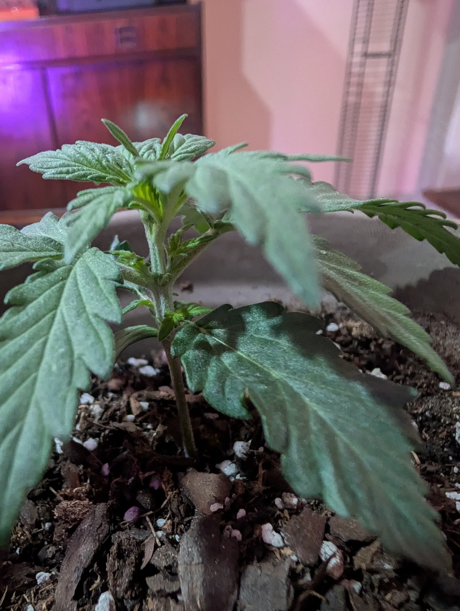
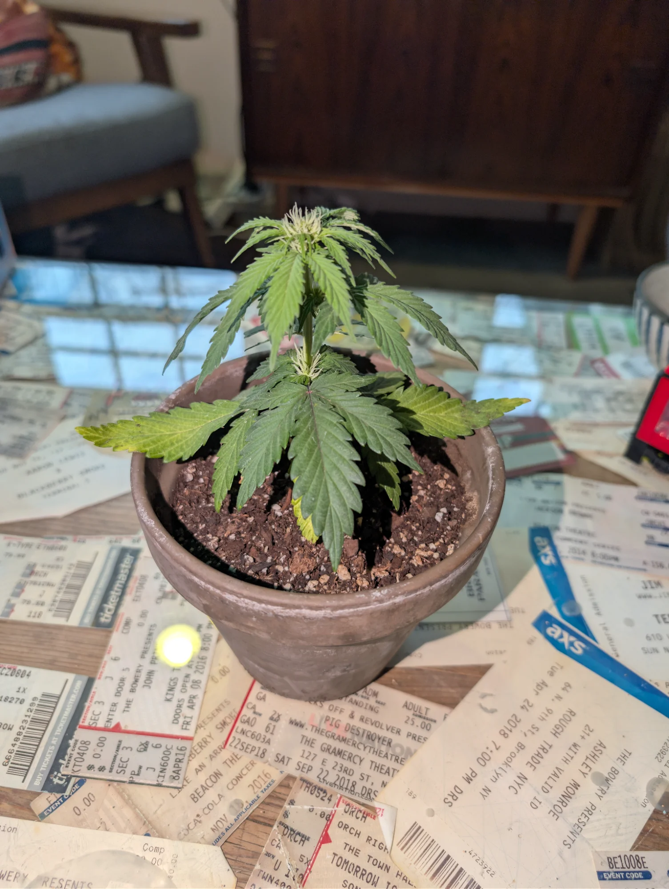
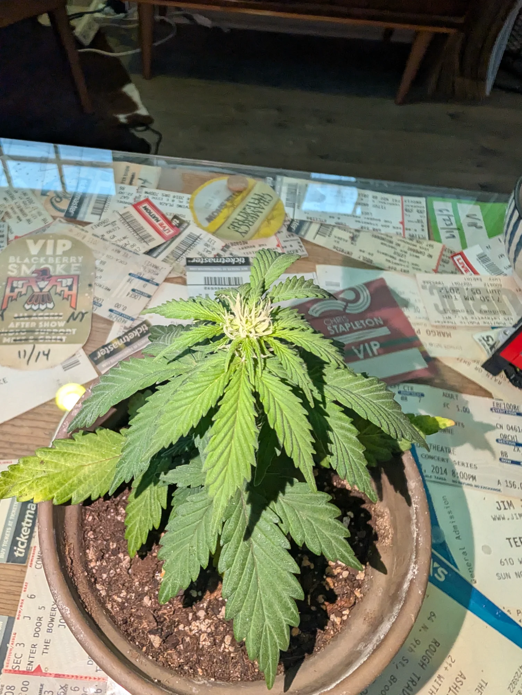
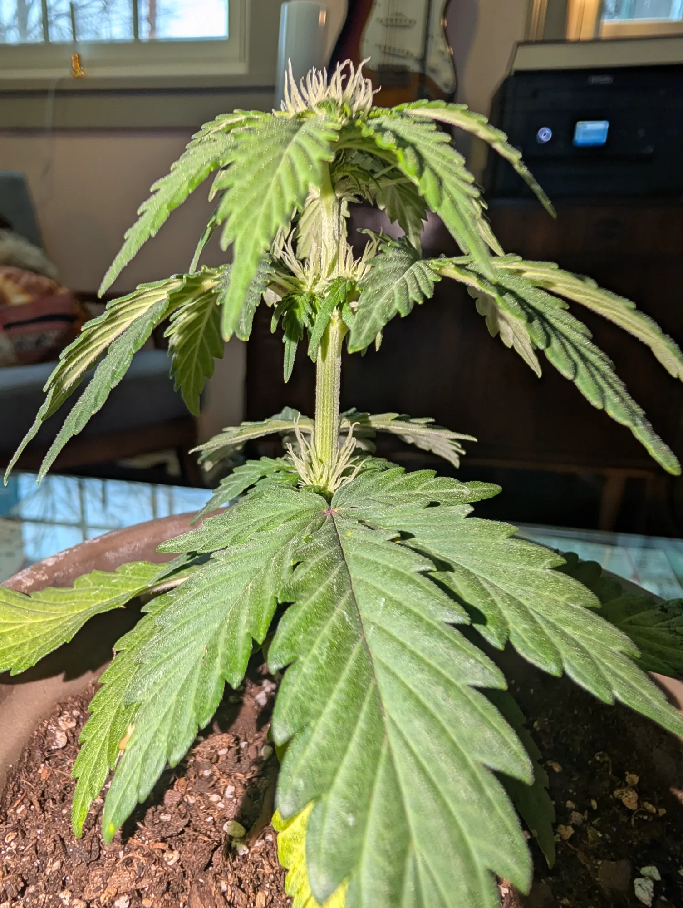
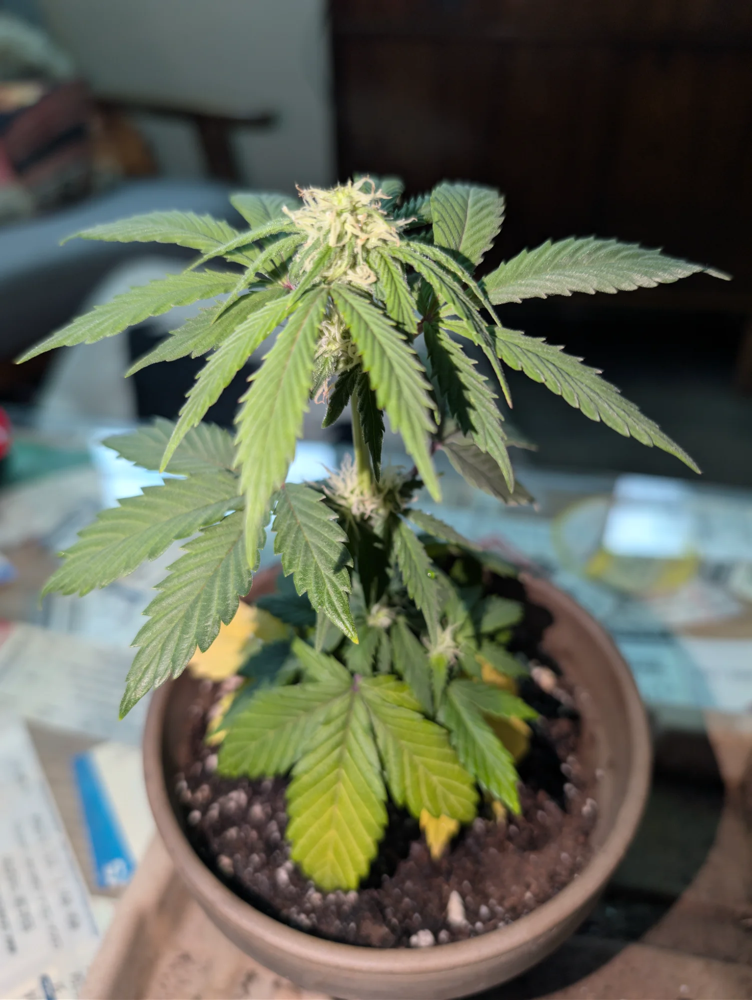
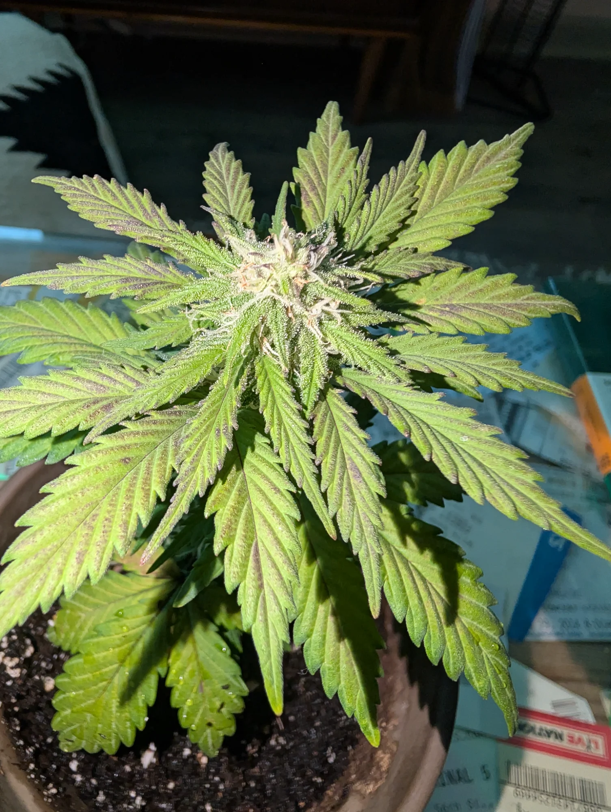
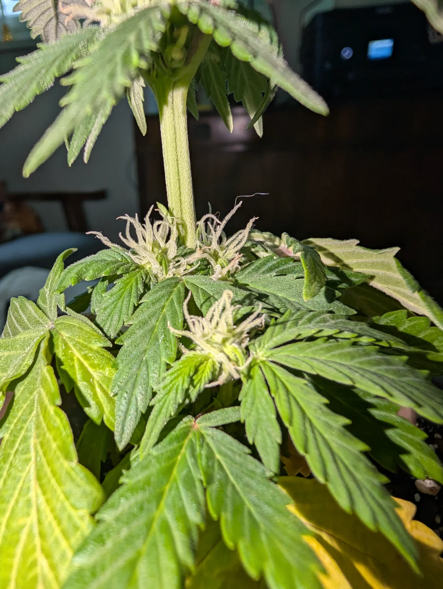


EQUIPMENT SETUP
LESSONS LEARNED
V2.0 failed due to using generic gardening soil. Potting soil provides proper drainage, aeration, and nutrient availability. This is now a hard rule.
Leaves "praying" upward indicates good light saturation and health. Bright lime green at the apical meristem confirms active growth.
Early stages required watering every few days. At 6" tall, daily watering is now necessary to meet increased metabolic demand.
Detailed logs allow you to replicate successes, diagnose problems, and set growth targets for future attempts.